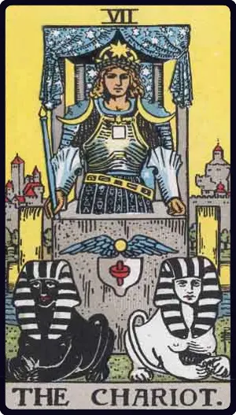

Card Grimoire
The Chariot
| Upright General | Upright Money | Upright Employment | Upright Love | Upright Health |
|---|---|---|---|---|
| Upright, The Chariot symbolizes taking control of competing forces, whether these are inner conflicts, people, or a situation in your life, in order to reach your goals. You're being carried toward your destination as quickly as possible. Whatever the task, you can handle it. You're keeping up with the changes that are happening, at your job, in a relationship, or in some type of community or worldly involvement. | In a reading about money, this card says you can't rush things. All you can do is hold on to the reins and guide the situation, using your willpower and mastery to bring a financial matter to a successful conclusion. | If the reading is about your job, The Chariot reminds you that to succeed you need self-mastery. You possess the means to triumph over obstacles and stay the course you've set for yourself. You're holding things together successfully, uniting opposing forces to stay on track. However, you may be required to make frequent adjustments to continue going in the right direction. | In a reading about love, this card recommends spending time in self-development rather than chasing after love. This may not be the right time to start a romance. If you're in a relationship already, you may need to take control of conflicting feelings or attitudes to bring about harmony. | |
| The Chariot invites you to trust yourself and meet challenges head-on instead of shrinking from them. This is a moment to test new skills, chart your own course, and channel your willpower to move past whatever stands in your way. The card also speaks to how you move through the world, including the energy you carry into a room and your everyday means of getting from place to place. You're being asked to take the wheel of your own direction and refuse to let fear dictate the outcome. | Financially, things are trending upward, and investments and savings you've started are paying off. Keep doing what's working and ride that momentum forward. | In your career, channel the Chariot's drive to outpace the competition and keep pressing forward, even through setbacks. Staying emotionally steady is what makes you unstoppable. | Watch for clashing values or beliefs with a partner, and make sure you're aligned before deepening a commitment. This card can also show up when you're content being single, or point to travel and road trips with loved ones. Just make sure everyone's needs are met so the trip stays enjoyable. | Take decisive, disciplined action toward your well-being now, whether that means committing to an exercise routine, adjusting your diet, or following through on a treatment plan. |
| Reversed General | Reversed Money | Reversed Employment | Reversed Love | Reversed Health |
|---|---|---|---|---|
| The Chariot reversed says changes are happening so fast you feel out of control. It may seem like you're being pulled in two directions at once, and the stress is intense. You fear you won't be able to control the multiple factors of a given situation. You're at a crossroads, choose your direction carefully. The more you can tune in to your own inner guidance, the more control you can exert outwardly. Most likely, the solution to the problem at hand is to take the middle road between the conflicting issues. | In a reading about money, you could suffer setbacks or losses due to confusion, indecision, or inattentiveness. Lack of confidence or inexperience could result in a poor choice. Or, you may rush into a financial matter unprepared and run headlong into a wall. | If the reading is about your job, competing factions may cause stress in your workplace and you feel incapable of controlling the situation. Or, things may be happening so fast your head is spinning and you can't get your bearings. Sometimes this card says you're being pulled in two different directions and can't decide which one to take. | In a reading about love, conflicts or differences in opinion, lifestyle, or values cause tension in a relationship. Or, a change has thrown you off-guard and you don't know how to handle the situation. Sometimes this card represents romantic involvement with two different people or a conflict between two things you love. | |
| Reversed, the Chariot points to someone who feels out of control, like the wheels have come off, torn between competing directions and overwhelmed by circumstances they can't manage. You may feel someone else has grabbed the reins, or that unhelpful routines and attachments are holding you back from your real potential. Don't crumble under the pressure; staying open to new paths and taking responsibility for your own choices, rather than pushing them onto others, is the way through. | Financially, expect possible setbacks tied to confusion, indecision, or lack of experience; rushing into a money decision unprepared can backfire. | At work, competing pressures may leave you feeling like you can't get your footing, or pulled between two directions you can't reconcile. | In relationships, differing values, lifestyles, or a sudden change can create friction and distance. This can also point to feeling torn between two people, or two things, you love. | Reversed, this card suggests loosening your grip on overly rigid regimens or traditional methods that no longer serve you, and questioning medical advice that feels out of step with your own needs, just stay safe and informed as you experiment. |
Archetypal Meaning
The Chariot marks an alignment of personal will with divine will, and the transformation of the personal self toward a wider, planetary consciousness.
The Fool's Journey: Control
Reaching adulthood, the traveler begins forging an identity and some self mastery at the Chariot's stage: control. Base urges come under control, alongside the lesson that being able to do something does not always mean it should be done.
Imagery and Symbolism
In many depictions, the charioteer sits beneath a canopy of stars, shoulders bearing crescent moon pauldrons, and wears a robe patterned with alchemical symbols. A crown of stars and green laurel marks past experience and success, alongside a connection to divine guidance. Two sphinxes, one black and one white, pull the chariot forward, embodying the thoughts, drives, and actions that must be reined in for forward movement. Behind the chariot, a city recedes into the distance, showing that the pursuit of knowledge draws us away from the familiar and onto a less-traveled path.
The lover of the previous card is now crowned with gold, a sign that he has resolved the conflict he once faced, and here the gold stands for the alchemical goal of enlightenment and transcendence. The man seems to be driving the Chariot, an image of control, yet a closer look reveals a twist that rewards careful study of every card: the horses wear no reins and the driver does not steer them, for driver and team appear to move as one. He holds a scepter in one hand while the other rests lightly at his waist, a casual but commanding gesture, secure within the four-posted canopy and free to enjoy the journey wherever it carries him.
The card holds none of the ambiguity of destiny but shows it instead as an unassailable force, expressed in the wheels of the vehicle, and the figure is now master of that destiny. The chariot is drawn by two horses, one white and one black, a sign of harmony between opposing forces even as they seem to pull in different directions. The scepter he carries marks a spiritual dimension alongside mastery of the material world. Tellingly, the card is named for the chariot rather than the charioteer, a clue to its emphasis: the chariot is not only a physical vehicle but a spiritual one, for the body is the chariot of the soul that carries us where we need to be, directed by the conscious mind. Seven itself is a sacred number of great significance that recurs again and again, in the seven planets, the seven days of the week, and the seven Heavens.
Tarot-Numerology
Number: 7
Positive: Completed work, peace, rest, introspection, spiritual rearrangement
Negative: Melancholy, fault-finding, sarcasm, coldness, aloofness, skepticism
Affirmation
I allow myself to take up space and move through the world with confidence, love, and grace.
Astrology
The Chariot is connected to the Water sign Cancer, ruled by the Moon. Cancer's intense drive toward emotional and physical security, along with its protective and intuitive nature, mirrors this card's themes of motion and emotional determination, harnessing inner strength and resilience to push through adversity with control.
Journal Prompts
Upright
- Where in my life do I need to consolidate my energy?
- Where in my life can I embrace more freedom?
Reversed
- Am I forcing an issue and pushing ahead without room for negotiation?
- What comes up for me when I feel out of control, and how does that feel?
Major Arcana Name Card
If The Chariot is your Major Arcana Name Card: You're determined and driven with a strong will to succeed. You thrive on challenges and can overcome obstacles through focus and perseverance. This card encourages you to channel your energy into clear goals and stay the course.
Curious which card is yours? Try Tarot-Numerology to find out.